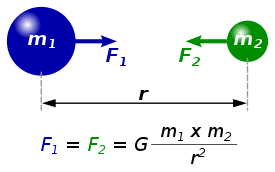

La ley de gravitación universal es una ley física clásica que describe la fuerza o interacción gravitatoria entre distintos cuerpos con masa, fue formulada por Isaac Newton en su libro Philosophiae Naturalis Principia Mathematica, publicado el 5 de julio de 1687, donde establece por primera vez una relación proporcional (deducida empíricamente de la observación) de la fuerza con que se atraen dos objetos con masa. Así, Newton dedujo que la fuerza con que se atraen dos cuerpos tenía que ser proporcional al producto de sus masas dividido por la distancia entre ellos al cuadrado. Para grandes distancias de separación entre cuerpos se observa que dicha fuerza actúa de manera muy aproximada como si toda la masa de cada uno de los cuerpos estuviese concentrada únicamente en su centro de gravedad, es decir, es como si dichos objetos fuesen únicamente un punto, lo cual permite reducir enormemente la complejidad de las interacciones entre cuerpos complejos. Así, con todo esto resulta que la ley de la gravitación universal predice que la fuerza ejercida entre dos cuerpos de masas y separados una distancia es igual al producto de sus masas e inversamente proporcional al cuadrado de la distancia.
